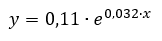

Opgave 1.
Bakterievækst
I en kultur af bakterier blev indholdet af bakterier fulgt med et spektrofotometer over tid. Målingerne fra spektrofotometeret fremgår af vedlagte
Excel-dokument.
| 1. Lav en relevant grafisk afbildning af målingerne med tilhørende relevant regression.
|
| 2. Vurder om dataene følger regressionen.
|
| 3. Beregn fordoblingstiden på kulturen.
|
| 4. Beregn hvor mange % indholdet af bakterier øges pr. minut med gennem forsøget.
|
En anden bakterie-kultur blev fulgt i et lignende forsøg. Her blev regressions-ligningen:

Hvor x er tiden i minutter og y er indholdet af bakterier.
| 5. Beregn fordoblingstiden på kulturen.
|
| 6. Beregn hvor mange % indholdet af bakterier øges pr. minut med gennem forsøget.
|
| 7. Vurder hvilken af de to kulturer, der vokser hurtigst.
|